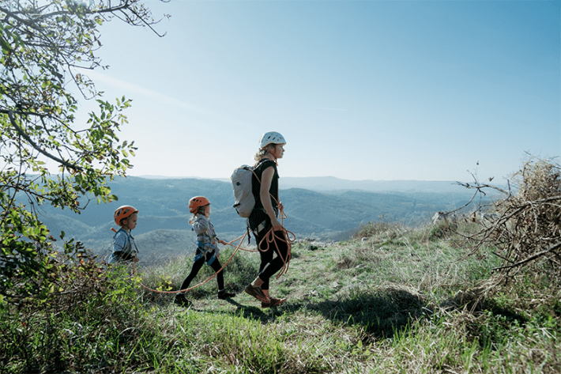
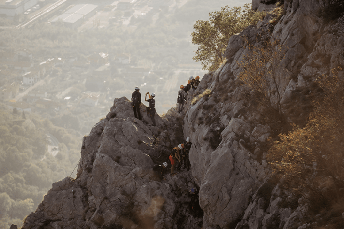
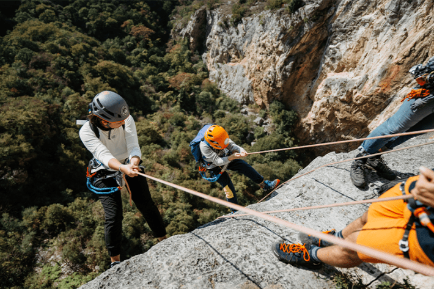

It’s not easy to walk up a hill with your arms crossed, but Viktoria C.* is trying. Many of the other women—all recent widows from Ukraine—are clumped into groups of two or three, but Viktoria, 42, walks alone. She looks like she’s trying to get this part of the day over with. It’s morning three of a five-day Climb to Heal program in Slovenia. Here, the women and their children, who were bused from war-torn areas, are hosted by a team of combat veterans, alpine guides, and psychologists from the United States and Europe. While the children are swimming and cliff jumping into the turquoise Adriatic Sea with a Ukrainian diving champion today, the mothers are hiking in the stony karst hills. Trees flank the rocky trail, but sometimes they thin enough to reveal the pale green pastoral landscape far below us of hills, farms, and, farther out, the Gulf of Trieste.
It’s a morning of complicated hopes. The mothers show a mixture of exhaustion, relief, skepticism, anxiety, and reserve. Viktoria’s neat blonde hair frames a broad face that is both impassive and alert, as if the hillside itself might rebuke her. She wears a gray velour tracksuit and sneakers as she slowly orients her limbs to the trail.
Amit Oren senses an opening. Petite and no-nonsense, she waves over a translator, and together they approach Viktoria with friendly smiles. A psychologist and assistant clinical professor at the Yale School of Medicine, Oren asks Viktoria if it’s okay to accompany her. The woman nods. I join them and we head up toward a ninth-century castle perched theatrically atop a natural cliff buttress overlooking the countryside.
The families here traveled by train and bus, escaping bomb shelters and shuttered schools.
“One of the reasons we’re here is to talk about how war and all the losses you’ve suffered have made you strong, but a little bit hard,” begins Oren. “Maybe. Maybe?” She peers into Viktoria’s face. “I see your chin moving,” says Oren. “I know I touched something deep inside you, because inside you is something different. But outside you present like this …” Oren crosses her arms and frowns. She’s slightly hamming it up. She is old enough to be a mother to these women, and she exudes both warmth and force. She has something to say and she wants them to hear it.
The translator interprets and talks a bit with Viktoria, whose husband, Vitalii, died 16 months ago. She turns to convey that Viktoria is struggling alone with two kids, and her mother is suffering from cancer. Her father drinks too much.
Oren nods. “Let me ask you something,” she says. “This is a hard question. How does being angry help you cope with these things?”
“It doesn’t,” answers Viktoria, “but I’m always mad at myself.” She explains she feels angry when she can’t cope, or get done what she needs to get done. Oren nods. She is sympathetic, but she’s also here to impart lessons in a limited period of time. Most of these women have never received counseling. In Ukraine, psychotherapy generally carries stigma, although that is starting to change in the midst of a grueling war marked by nearly three years of ongoing terror and devastation.
Ukraine doesn’t release the number of soldiers killed in action since Russia invaded the country in February 2022, but U.S. officials believe it’s at least 70,000. The result: an enormous cohort of widows and children navigating grief, trauma, and ongoing danger. The families here traveled by train and bus, escaping bomb shelters and shuttered schools. Some may carry post-traumatic stress; others remain lodged in continuous trauma, their nervous systems constantly primed for the worst.

OUTWARD-BOUND: The Ukrainian war widows and their children spent five days participating in adventure-therapy and a reprieve from the stresses of grief and a life lived in near-constant danger. Photo by Stefan Faullend.
Along the trail, some of the women stop to take selfies and point to mushrooms. Sunlight filters through the forest canopy. The chirping birds are a surreal change from the air raid sirens back home. Alla K., a blonde, thin, 44-year-old lost her husband to bullet wounds five months into the war. She still doesn’t know how to tell her 8-year-old son, Yevhenii, what happened to his father. Between COVID-19 and the war, the boy has been attending school online for four years. Alla worries he isn’t developing proper motor or social skills, and she’s paralyzed with fear for her older son, 21, who is now serving in the army.
Rymma B., 38, is a fitness trainer and mother of two whose husband died just before their 16th anniversary. “I keep waiting for his return,” she says. “I don’t understand how to live on.” Natalia N., 44, has seen her village destroyed. She says she has lost her sense of purpose now that her husband is gone. Alona L., 41, often imagines her husband is still inside their house. She worries about their 12-year-old daughter, Veronika, who suffers from constant headaches. All of the women fear for their family’s safety.
They didn’t know each other before arriving, but this group of 13 mothers and 17 children draws from neighboring cities and villages close to the southern front where Russia has recently gained ground. They are the third cohort of widows brought together by Mountain Seed Foundation, a U.S.-based veteran-led nonprofit whose aim this week is twofold: Imbue the women with positive psychology, and then send them down a cliff-face.
As someone who’s spent years reporting and writing about how exposure to gentle green places can help calm our nervous systems, I’m a believer in the healing power of nature. But I’m wondering if these women are really ready for what’s ahead at the end of the week: a rappel off a 300-foot cliff. Some of them have barely left the bomb shelter in many months. Amidst the grief, the trauma, the exhaustion, I wonder whether this sort of adventure-based program can help—and so quickly. So I join them.
Out here in the foothills, Oren isn’t particularly interested in diagnoses, or even talking much about what’s happening in their lives. Like me, she is keenly aware of the limits of such a short time frame. Five days, she told me, isn’t enough time to open trauma wounds and stitch them back up again. Instead, she teaches simple psychological skills she believes can help improve their daily functioning and begin to shift their mindsets toward something resembling hope.
“Negative feelings like anger constrict our way of thinking,” she says to Viktoria. “You’re less creative, and it’s more difficult to find solutions.” Viktoria nods as Oren goes on to explain that positive emotions do the opposite: They broaden possibility.
This is the central theme of Oren’s work here this week, a program she calls Permission to Flourish. Heavily influenced by the positive psychology movement launched in the 1990s by University of Pennsylvania scholar Martin Seligman and others, it embraces the idea that facing stressful and even dire circumstances, we can choose to focus on good things around us, lean into our strengths, and find deeper wells of resilience.1
“Is there anything that makes you feel good?” Oren asks Viktoria.
She answers that she feels proud when her children do well in school, but she’s usually too busy to enjoy that for long.
“Ah,” says Oren. She puts one hand in front of her, and then the other. “There’s light there, and there’s dark here. Both are in front of you. Where you choose to look is your choice. When your kids come to you with their achievements, take that one moment and stretch it for five minutes. You can say, in this moment, life is good.”
We arrive at the castle. Some of the women stand on a stone wall overlooking the green valley below. Oren gathers the women at the base of the castle, built first to repel Hungarians, then Turks, then Venetians over control of the salt trade in the 16th century.
The program’s aim is two-fold: Imbue the women with positive psychology, and then send them down a cliff-face.
“When you first came to camp, many of you felt to me like you were closed with castle walls,” she says. “A fortress is made to protect, but sometimes we protect too much. Because what happens when you enclose yourself behind a fortress wall? You see this wall in front? It has no opening. You can’t see the beauty outside. Opening takes a long time when you’re scared. So you start small.”
I worry Oren’s metaphor is too obvious, perhaps patronizing. At moments like this, the week feels a bit out of sync with reality, like vacation with pep talks. This week the women are encouraged to get massages, take a boat ride, and eat gelato before heading back to the killing drones. Yet these perks lured them here—it was most likely not the opportunity to get therapized. Here was an all-expenses paid chance to get away, give their kids some time to play with other kids (who, not incidentally, are also getting their own adventure therapy through play and rock-climbing), and enjoy some brief periods of the day with no responsibilities. If they started out skeptical of a therapy agenda, they likely still are.
Then again, this isn’t standard therapy. “What I do isn’t therapy so much as cognitive restructuring,” Oren told me before the women arrived. She explained that we are people with habitual thought patterns, and for most of us, our thoughts tend to amplify sensations of distress in order to protect us from harm. Restructuring those neural pathways is tremendously difficult and takes a lot of effort, she said, but it can be done.
Even so, I had to wonder: Are these life-can-be-good talks reaching them in a meaningful way? Is it too soon?
Positive psychology emerged as a counterpoint to a clinical field focused on pathology, neuroses, and expensive psychoanalysis. As Seligman and Mihaly Csikszentmihalyi wrote in their influential 2000 book, Positive Psychology: An Introduction, “Treatment is not just fixing what is broken; it is nurturing what is best.”1
Practitioners champion cultivating optimism, personal strengths, and other factors that maximize well-being. “PERMA-plus” sounds like a breakfast cereal, but it’s a popular model Seligman developed that stands for positive emotion, engagement, relationships, meaning, and achievement, with the “plus” being biological factors such as sleep and nutrition.2, 3
But emphasizing positivity risks minimizing or dismissing the very real suffering and ongoing threats people face. Critics point to the “toxic positivity” of some pop-psych books and Instagram feeds that goad people to embrace happy slogans and exile negative people or emotions. While many studies4 link an optimistic mindset to good health and professional outcomes (and it’s hard to tease apart whether the relationship is causal), other research shows that discounting authentic emotions increases mental health risks.5
After all, these women, currently in the mountains of Slovenia, are fighting for survival in a way few affluent Westerners, however well intentioned, understand. Oren is aware of the need to acknowledge pain while also encouraging hope. A descendant of Jews who fled Ukraine in the pogroms of 1905, she herself struggles with a tendency to think dark. “I live with a dark cloud, but I also realize I can shift that,” she told me. To this end, she gardens, she walks in nature, she frequently reviews what she’s grateful for. It requires constant practice.
“Probably the biggest piece I teach these women is that, yes, you are in extremely difficult circumstances and you do have to be aware of the dangers, but take a moment to also appreciate the goodness and beauty around you to create a life worth living, not just a life of surviving. We shore up the resources they already have inside them.” She acknowledges the discordance of it all. “It’s a daring attempt with this group in that they have vivid concerns about bombs being thrown at them daily.”
Each morning Oren shepherds the women and children through some breathing exercises and a reminder to find three good things to focus on throughout the day. Then she leads a mothers’ discussion group loosely centered around an element of the PERMA model. One day focuses on finding purpose, another on recognizing each woman’s particular strengths and how they’ve helped her cope. One woman says she makes silk flowers for military graves; another volunteers at an animal shelter. Oren encourages one mother to knit socks for her older son’s battalion commander. Posters with inspiring quotes from the likes of Viktor Frankl and Audre Lorde (“Caring for myself is not self-indulgence. It is an act of political warfare.”) hang on the wall of the hotel conference room.

FACING FEAR: The idea that courting fear could help those living in a war-torn area seems daring, at best. But psychologists continue to see positive effects of nature adventure-based programs on those who have faced trauma. Photo by Stefan Faullend.
But Oren also lets the women briefly share their challenges if they want. Viktoria’s hardened posture isn’t unique. Lena S., 41, whose husband was killed in 2023 during fighting in the eastern city of Bakhmut, says she now has to manage everything alone, including running a small farm. Her friends, she says, aren’t there for her. Tetiana H., 47, says she feels like some neighbors and relatives are judging her.
Being tough and self-sufficient are considered laudable traits among Ukrainians. But they are ones that Oren and Mountain Seed co-founder Nathan Schmidt hope to disrupt, at least a little bit. Today, Schmidt, 42, has a bit of a dad bod, reflecting his love for gelato, which he shares with his wife and four kids. During three combat tours as a U.S. Marine in Iraq, he kicked down doors, sometimes destroyed houses while children watched, and helped scorch soccer fields. “The thing I remember most are the eyes of the children,” he said. “All they wanted to do was play football. And we took football away.”
Coming home, Schmidt wrestled with post-traumatic stress disorder (PTSD), depression, and the moral injuries of war he felt nobody was talking about. Hoping to prevent future wars, he joined the foreign service, getting stationed in Kyiv shortly after Russia invaded Crimea in 2014. But diplomacy didn’t work either, not for eastern European geopolitics and not for his depression.
Then in 2019 a friend took him mountaineering for the first time. It was hard, it was dangerous, it was exhilarating. Suddenly, he didn’t feel so numb. He credits those five days with changing his life. “You’re in nature with people that you care about, not connected to all the things that stress you out. It woke me to how small I am and the strength in that humility.”
Visiting partially bombed out schools in the Donbass region of Ukraine, a new purpose coalesced in his mind: Do something for these kids. Why can’t they have an expeditionary experience like he did, a chance to gain some peace, some self-confidence, a new perspective through adventure that they can overcome hardship? “I wanted them to know that they could go through life actually trusting other people—and having a chance to be a kid.”
He shares these stories publicly with the widows and their children, and he allows himself to cry when he tells them. It’s important to him to demonstrate healthy emotions, as well as to emphasize the power of both nature and community for healing. He knows there’s a lot at stake. According to a United Nations report from 2019, as many as 70 percent of children who experience armed conflict are very likely to have at least one psychological disorder.6
On the first evening of the week, Schmidt gathered everyone—mothers, kids, mountain guides—in a circle in a hotel courtyard and passed around a long climbing rope so that everyone could hold onto a section. “Now you’re on our rope,” he said. “And when you’re on our rope, you’re on our rope. The rope symbolizes community.” He gave it a tug. “When you pull the rope, other people feel the rope being moved, right?” Five-year-old Paulina in her pink winter jacket looked at him with big eyes. “We take care of each other when we’re on the same rope,” he said.
If Oren identifies the positive psychoeducational model as the key element to transforming lives, for Schmidt it’s the opportunity to meet physical and mental challenges. The two leaders’ approaches are designed to complement each other during the week’s program. “I had to be afraid in a controlled environment and overcome it,” he said. This component, he believes, enables powerful insights in a limited period of time. Funding from the Buffett Foundation helped enable the nonprofit to run three five-day camps last year as well as develop a year-round climbing gym in Lviv, Ukraine, for military families. This year, Mountain Seed plans to offer many more expeditionary programs, and soon in Ukraine’s Carpathian Mountains. But I still doubted if five days away from war and into adventure would really be enough time to make an emotional and psychological difference in these families’ lives.
Ukrainian psychologist Alla Shut believes the answer is yes. Her day job in Kyiv is counseling veterans and war widows, and she has also worked with intensive 21-day clinical programs, but she says she sees more transformation here in the mountains.
“I am amazed at what happens in five days,” Shut, who was on hand to support the women and children as needed, said. “By the end, they’re not exhausted, they’re full of this positive energy. They leave feeling what kinds of things that life should be. Here we teach them that even living under the bombing, you should pay attention to this very tasty dessert, this very tasty tea, to this fine weather—because it’s impossible for Ukrainians to know if this night will be okay for us or not.”
But to the extent that any mental transformation is happening, it is hard to attribute it to the leaders’ favorite components. Both approaches—challenges through adventure sports and positive psychology—are controversial in working with trauma. For the mountaineering, what might have helped Schmidt, a white American man trained in the military, certainly might not help others who experience life-threatening events at much earlier ages and with different identities and in different cultures. Some researchers are questioning whether courting fear is helpful for people with PTSD to experience mindfulness, form new bonds, and gain self confidence.7

OVER THE EDGE: Over the course of the five-day program, the widows and their children learned to trust the mountaineering equipment, trust each other, and trust themselves—many enough to take on a daunting 300-foot rappel. Photo by Stefan Faullend.
“That’s a big topic of discussion in the field,” Christine Norton, a professor of social work with a focus on wilderness therapy at Texas State University, told me. “I do think there’s value in overcoming challenge, and realizing, ‘Wow, I’m stronger than I know.’ But it should be invitational, gradual, and with a menu of options.”
Providing both risk and safety is a delicate balance. On day four, the mothers and children head out together to a popular rock climbing area in western Slovenia called Črni Kal. The routes here are near each other, with some lines offering very easy short routes and some more technical ones. By now, after working with instructors all week, the children have grown more confident in their skills. Today is a chance for them to show their mothers what they can do, and for the moms to try some climbs themselves. The tall trees are just starting to turn golden. The grasses are still green; the sky is blue.
Two 12-year-old girls check each other’s helmets. They’ve become friends. Kids coach their moms into climbing harnesses. Valentyna S. unfurls a blue-and-yellow Ukrainian flag. Printed in the center is a photo of her fallen husband, Konstantin. She ties one end under her chin, cape-style. “It makes me feel warm and wrapped up by him,” she says, preparing to climb. “I want to show him what I can do.” Her 15-year-old son, Hlib, watches as one of the guides clips his mother’s harness into a carabiner. She slowly ascends the wall, the flag flowing from her shoulders. She looks every bit a superhero.
The kids and most of the women and the therapists and I all take turns up several short routes. Even some of the mothers who said at first they didn’t want to go get excited to try it. I’m amazed to see one mother who seemed very listless earlier in the week infused with a long-dormant athleticism and energy. When they get to the top of the rope, they turn back and smile at their kids below. Alla thought her son Yevhenii would be excited for her, but he turns to her with consternation. For a moment, he didn’t know where she was. Now back on the ground, she tries to hug him but he swats her away. Her smile fades. But soon he is off playing with another boy, and she looks relieved.
During a lunchtime lull, Roman Kozicky, a young psychotherapist from Brooklyn, notices some of the children have pulled out their phones. He wishes they wouldn’t, but he shrugs. Phones teach us to avoid emotions, he tells me, but climbing does the opposite: It teaches us to respect emotions, and confront them.
Take fear: Humans are supposed to be afraid of heights. All these kids felt it over the first few days. “I can confront this fear I have of falling from a great height,” says Kozicky. “I learn to trust the equipment, and myself. And instead of this anxiety holding me back, I can acknowledge it and yet still proceed. It’s a reminder that your emotions don’t have to paralyze you.”
Lanky and playful, Kozicky—whose father’s parents were forced out of Ukraine by Nazis and whose mother’s parents fled the country under Stalin for New York—speaks Ukrainian and values working these programs. Trained as a clinician in talk therapy, he finds the non-verbal work—things like climbing or tossing a ball or even playing around with pressurized soda bottles in a park—more powerful for kids with trauma. He helps them work with breathing techniques, with posture, with taking small steps. “You’re creating your own stability in an environment that is unstable.”
There’s not a lot of data looking at adventure therapy for people experiencing war-related trauma, but there is some. One study published in Psychiatry Research found that a sailing program for Israeli veterans with PTSD led to improvements in quality of life, depression, daily functioning, and hope.8 Another, from the journal Emotion, found that a whitewater rafting trip led to a reduction in symptoms of stress in dozens of U.S. veterans as well as teens living in violent parts of Oakland, California.9 In a new pilot study run by researchers at the University of Utah, veterans attending five-day wilderness trips showed significant improvements on measures of loneliness, social connection, mood, and perceived stress.
In the rafting study, researchers found that the emotion of awe—more than other positive emotions—triggered the largest mental health benefits. Little is known about how long the effects last. “If one day of rafting gave them a week of well-being benefits, we think after four or five days of really being in the outdoors, you start to show some of the benefits profoundly,” said University of California, Berkeley psychologist Dacher Keltner, who co-authored the study. “Where science will be really helpful is to start to chart how much awe do we need to really find deep lasting benefits?”
Researchers are discovering that experiencing awe enables exactly what the positive psychologists talk about, especially a mental reframing of the stories we tell ourselves and a drive toward forming bonds. When we experience collective awe, we feel closer to each other, less lonely, and less consumed by our own problems. Ultimately, these are the conditions necessary for healing war trauma, said Norton. “The experience of powerlessness can become a belief: I am powerless,” she explained. “And then that belief, if experienced over and over again, can become a worldview, which is: I have no power in this world. With outdoor adventure therapy, you get to experience some positive emotions you may not have thought were possible. Getting [these participants] back in their bodies, getting them connected to themselves and connected to each other and the natural world is the ultimate way of reorienting toward well-being.”
When you’re dangling on a cliff face, the present moment eclipses the ruminating mind.
If awe, movement, and nature are really doing the heavy lifting, the specific curriculum here is perhaps besides the point. Rope and castle metaphors might be helpful, but it’s also necessary for the moms and kids to feel a glimpse of a new reality in their bodies: a sensorial kind of aliveness.
Plenty of nature-based interventions exist for people suffering from trauma, and the modalities, therapies, and activities are all over the map. Another program for Ukrainians called Metta NGO employs a four-day structure in the Carpathians, and it has served about 500 veterans, widows, and parents of fallen soldiers. Rather than being “challenged” per se, participants spend time hiking, doing mindfulness exercises in nature, and singing and talking around a campfire. They can also elect to have sessions with therapists through the program.
“We use a combination of cognitive behavior therapy, EMDR [eye movement desensitization and reprocessing, often used to treat trauma], and somatic experience therapy,” said co-founder and therapist Yulia Stadnytska, who is based in Lviv. But the biggest factors in healing, she believes, are the peer-to-peer support and just being outside. “In nature, everything has a cycle and a process,” she said. “This message is very powerful to give permission to grieve at your own pace, in your own process. It’s not a forced message from a social environment. For them, just hiking and talking means more to them than a particular psychologist saying this technique or that.”
The time outdoors might resonate particularly strongly with Ukrainians, Stadnytska said. “We are still an agricultural country,” she said. “We have a lot of gardens, we plant seeds, many Ukrainians have grandparents who farmed, and many of the population likes to go to the mountains and the forests.”
By Friday, our final day in the field, nine of the 13 mothers decide to go for the big culminating activity of the week: the 300-foot rappel. The whole group, including the kids, walks up to a meadow at the top of a cliff outside the town of Istria. It’s filled with golden grasses, yellow groundsel blossoms, rosy shrubs. The families wander the hillside and unpack their sandwiches. One of the moms, Olena R., surprises another, Valentyna, with a hand-gathered bouquet. She leans down and hugs her and together they sit in the sun, laughing.
Soon it’s time to cinch up the harnesses and walk to the edge of the chasm from which we will start the long, two-pitch rappel. It looks impossibly far to the ground below, which we can’t even make out, although we know Schmidt will be there to ease the landing and offer high fives. The women gather around each other for pictures and raucous Ukrainian cheers, one of which ends with telling Putin to go screw himself.
Ruslana M. is the one wearing a Ukrainian flag today. She wants it for strength. Her 12-year-old daughter, Leeza, gives her an excited hug and wishes her the best. Then the guides offer encouraging words and instruction to keep leaning out over the abyss as Ruslana holds the top rope. Standing at the lip, testing her weight on the rope, she looks terrified. She starts and stops several times. I wonder again if this is a good idea. I see her close her eyes and breathe, practicing the box breath Oren taught her. She plants one foot on the karst rock, then the other below, and slowly disappears over the edge.
Waiting for our turns, Olena tells me she was afraid yesterday but feels brave today. She feels calm. She stares at a picture of her husband on her phone. His name is Aleksander. He’s tall and bearded, standing in a field of cornflowers, wearing a sly smile. She kisses the picture and quickly puts the phone away. She walks to the lip and, with help from the team, hooks herself to the rope.
I follow them down, heart hammering. There’s no choice but to accept that I’m dangling from a rope high above the ground. It’s an exercise in surrender. I realize just how much of the positive-psychology dogma naturally emerges when you’re dangling on a cliff face. The present moment eclipses the ruminating mind. Focus on where your foot lands. Trust it’s going to work out. This moment, like every moment, has a beginning, a middle, and an end. Keep going. And then I notice the lichen on the wall, the warm air on my shoulders, the feel of my legs in the harness.
At the bottom, there’s Schmidt—quintessential dad—waiting with a hug. The other women who have descended seem relieved and also a little drained. Everyone looks up in awe at the sheer face of the wall we’ve just rappelled. It all would have been impossible to imagine a week earlier. Iryna S., a mother of two boys who are also about to defy gravity, captures the moment later when she says, “The descent from the mountain was an explosion of emotions for me. I was terrified but also very curious. I want to experience such emotions in everything I do.”
It’s the last meeting, and the women are writing notes about what they’ve learned. They look different. More relaxed, but also more engaged. They’re not just telling Oren what she wants to hear. Their faces are so complex. I see the yearning, the problem solving, the real affection they’ve developed for one another. They will stay in touch now, and some will seek further counseling with help from Mountain Seed.
In Olena, writing her notes, I see so many layers in those gentle contours, centuries lived in the lifetime of a woman. Her face will stay with me for weeks. I will see her kissing her husband’s photo. I will see her crying, then laughing, bestowing her new friend with flowers from a peaceful field in the sun. 
*Last names have been abbreviated to protect participants' privacy and that of their families.
References
-
Seligman, M. & Csíkszentmihályi, M. Positive psychology: An introduction. American Psychologist 55, 5-14 (2000).
-
Cabanas, E. & González, J.C.S. The roots of positive psychology. Psychologist Papers 30, 172-182 (2012).
-
Seligman, M. PERMA and the building blocks of well-being. The Journal of Positive Psychology 13, 1-3 (2018).
-
Oh, J., et al. Health and well-being consequences of optimism across 25 years in the Rochester Adult Longitudinal Study. Journal of Research in Personality 99, 104237 (2022).
-
Wyatt, Z. The dark side of #PositiveVibes: Understanding toxic positivity in modern culture. Psychiatry and Behavioral Health 3, 1-6 (2024).
-
Frounfelker, R.L., et al. Living through war: Mental health of children and youth in conflict-affected areas. International Review of the Red Cross 101, 481-506 (2019).
-
Berman, D.S. & Davis-Berman, J. Positive psychology and outdoor education. Journal of Experiential Education 28, 17-24 (2005).
-
Gelkopf, M., Hasson-Ohayon, I., Bikman, M., & Kravetz, S. Nature adventure rehabilitation for combat-related posttraumatic chronic stress disorder: A randomized control trial. Psychiatry Research 209, 485-493 (2013).
-
Anderson, C.L., Monroy, M., & Keltner, D. Awe in nature heals: Evidence from military veterans, at-risk youth, and college students. Emotion 18, 1195-1202 (2018).
Lead image: Valentyna S. practices a repel, wearing a Ukrainian flag-style banner featuring the face of her husband, Konstantin. Photo by Stefan Faullend.
References
- Original Article: https://nautil.us/ukrainian-war-widows-on-the-edge-1188922/